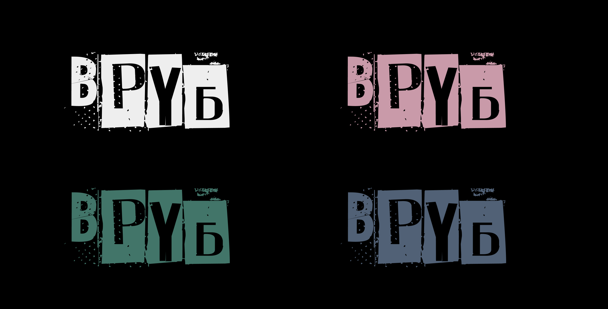

Вруб — медиа о современной альтернативной русскоязычной музыке, содержащее информацию в виде статей, тестов и подборок о биографиях исполнителей, основных жанрах и в целом о музыкальной культуре cовременности.
Бунтарский, эмоциональный, свободный, мечтательный, экспериментальный, творческий, независимый, рискованный, открытый, яркий, спонтанный, стильный, искренний
Миссия бренда — отразить многогранность современной независимой альтернативной русскоязычной музыки, показать новые имена и повысить интерес к нашей музыке и музыкальной культуре.
Открытость к не знанию, не страшно, если вы за что‑то не «шарите»
Драйв, свобода, искренность и вдохновение — ключ к развитию
Дружелюбность, с каждым пользователем «на одной волне»
Любовь к культуре родины
Айдентика основана на mixed media, смешении визуальных техник — фотографий, иллюстраций, текстур, шумов, иконок. Все это транслирует идею о синтезе всего что только можно в современной музыке — отсюда рождаются новые поджанры и направления, делающие современную музыку такой необычной.
«На одной волне»
Мы используем дружелюбный tone of voice, чтобы показать, что молодежная музыка — это не только ирония, дерзость и грубость, это также открытость, эксперименты, свободолюбие и творчество.
Логотип набран шрифтом Phorssa, это отсылка на панк-зины 80-х. Можно использовать как два акцентных цвета, так и один акцентный цвет в паре с черным или белым.
Можно использовать следующие варианты:
Особенность некоторых обложек альбомов русскоязычных исполнителей — темные тона и приглушенные цвета, поэтому было принято решение использовать грязноватые акцентные цвета в сочетании.
В сочетании с разнообразной графикой для заголовков был выбран низкочастотный гротеск Bebas Neue в жирном начертании. Для наборного текста — Golos UI, идеально подходящий для сайтов, благодаря фиксированной ширине знаков.
В основе стиля лежит коллаж из mixed media, комбинации нескольких визуальных техник. Идея вдохновлена русским поэтическим стрит-артом и синтезом музыкальных направлений в современной музыке, который создает новые жанры и комбинации из необычных сочетаний.